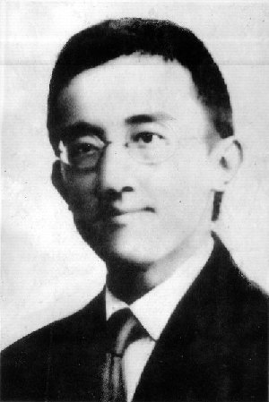

|
杨闇公（1898——1927）本籍 |
|  |
中国共产主义运动先驱者、四川党团组织主要创建人和大革命运动的主要领导人，重庆革命领袖。1917年，东渡日本，求救国救民之道，回国后与吴玉章等在四川从事建党工作，1924年1月秘密组织"中国青年共产党"。1925年，自行取消中国青年共产党，加入中国共产党，任重庆团地委组织部长、书记。创办重庆中法学校。1926年2月，经中共中央批准，任中共重庆地方执行委员会首任书记，领导四川国共合作。后兼任军委书记，与朱德、刘伯承、陈毅共同发动领导了顺泸起义。1927年"三·三一惨案"后不幸被捕，1927年4月6日牺牲。有《杨闇公文集》传世。 |